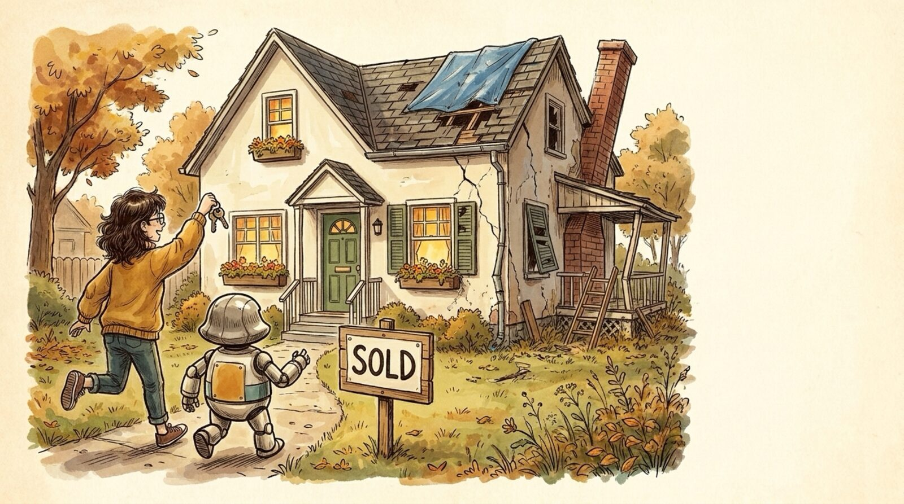

<section id="p14" data-transition="fade" style="background:#f5eee0">
  
  <div style="position:absolute; top:250px; left:1270px; width:600px; height:420px; display:flex; flex-direction:column; background:#f5eee0e6; border-radius:24px">
  </div>
  <h1 style="position:absolute; top:300px; left:1300px; width:540px; font-family:Arial, sans-serif; font-size:56px; font-weight:400; line-height:1.1; color:#222222"><b>Analogy:</b><br><br>Kind of like owning a house?</h1>
  <aside>Analogy: owning a house. You just bought it (SOLD!), and the front looks lovely, but out back the roof needs repair and parts are a fixer-upper. Three levels of risk: (a) It's ugly: a bad paint job, poorly hung frames. (b) Only you or your property get hurt: a poorly installed roof, knocking down a wall. (c) People die or lots of damage: wrong roof support, no fireproofing.</aside>
</section>
